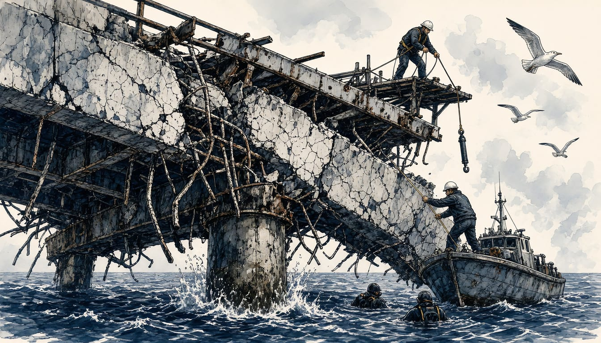

Ukraine halts traffic on Kerch Bridge. Russian missile attack closes two Kyiv bridges
Ukraine's strike on the Kerch Bridge halted road and rail traffic. A Russian missile attack on two Kyiv bridges killed two people and cut water and heating in parts of the capital. Russia's Investigative Committee has opened a criminal case over the attack on its supply route to occupied Crimea.

Ukraine struck the Crimean Bridge on 17 November, halting road and rail traffic, in what President Volodymyr Zelensky called the seventh phase of a weeks-long operation. On 17 November, shortly after the bridge strike, Russian forces launched a ballistic missile attack across Ukraine that hit the Northern and Southern Bridges across the Dnipro in Kyiv, forcing them to close. The attack killed two people and cut water and heating in some districts.
The Guardian reported that the strike was carried out with a Flamingo missile, a weapon with a range of up to 3,000 kilometres. Andrii Kharuk, a Ukrainian military aviation expert, said the collapsed 6,000-tonne section cannot be patched with a temporary fix. Restoring it, he said, will take not just months but a year or longer.
The Kerch Bridge runs 19 kilometres, as Al Jazeera and Kyiv Post report. It is a key supply route connecting Russia to its forces in occupied Crimea and southern Ukraine. Russia's Investigative Committee opened a criminal case under Article 205 of its Criminal Code over the attack by Ukrainian drones on the bridge.
The damaged Northern Bridge lies in Kyiv's Desnianskyi district. Falling debris started a fire in the courtyard of a 16-storey residential building. Forbes reported that the two dead were found in the Obolonskyi district, where a non-residential building was struck.
The Institute for the Study of War warned in its 14 November assessment that Russia's intensified strikes on Kyiv's bridges may aim beyond severed river crossings. Its analysts read them as part of an effort to split the capital's electricity network along the Dnipro. The attacks would also disrupt civilian traffic and logistics while isolating parts of Ukraine's power grid.